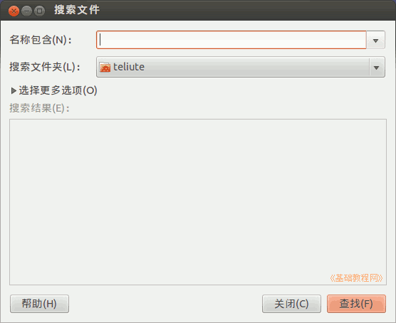
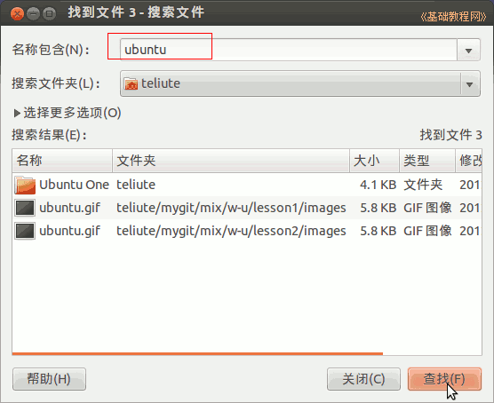
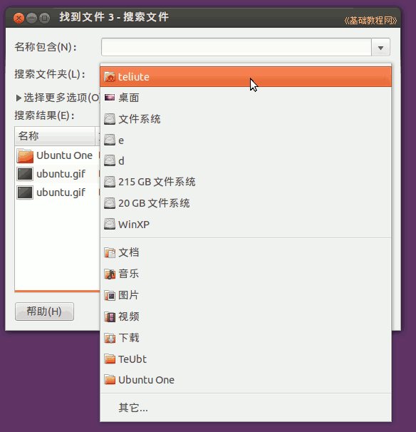
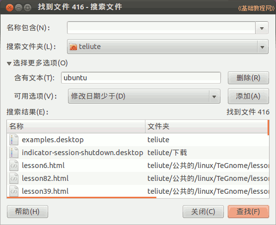
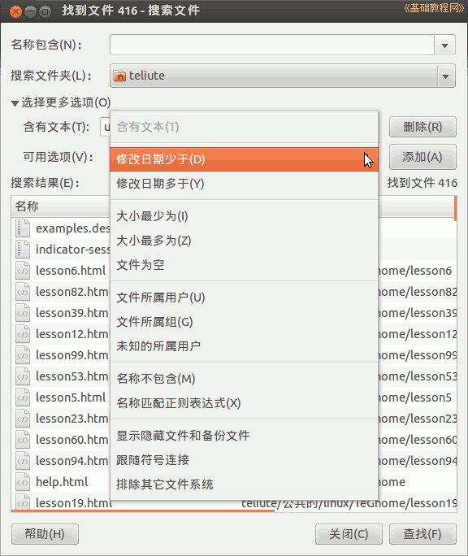

Ubuntu 入门操作指南
作者：TeliuTe 来源：基础教程网
二十八、搜索文件 返回目录 下一课使用搜索，可以查找指定的文件，如果没有安装，就在软件中心或新立得里搜索安装 gnome-search-tool
1、搜索文件
1）点击主按钮，在搜索中输入search ，打开程序，或者依次点“主按钮、所有程序、过滤结果、附件、搜索文件”；

2）打开的窗口中，包括文件名称框、文件夹下拉列表、更多选项和搜索结果列表，输入一个文件名，默认是在自己的主文件夹搜索，点“查找”按钮开始搜索；

3）点“搜索文件夹”可以在其他地方查找，比如在“文件系统”中；

4）点“更多选项”揿钮，在下拉列表中选一个后点“添加”按钮，就可以按这个条件来搜索，时间久也可以点“停止”；

5）可以选多个条件，也可以删除条件；

本节学习了搜索文件的基础知识，如果你成功地完成了练习，请继续学习下一课内容；
本教程由86团学校TeliuTe制作|著作权所有
基础教程网：http://teliute.org/
美丽的校园……
转载和引用本站内容，请保留作者和本站链接。